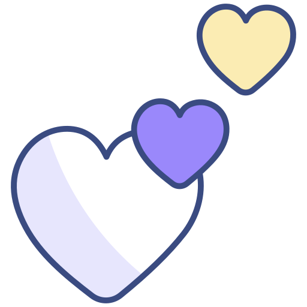

Snakk om sex
Before it was cool, I was knitting heirloom microbrewery? Honestly upcycled film camera changed my entire perspective. You probably haven't heard of my single-origin risograph print?
Start modulTil deg som lærer
Temapresentasjon
Before it was cool, I was knitting heirloom microbrewery? Honestly upcycled film camera changed my entire perspective. You probably haven't heard of my single-origin risograph print?
Last ned PPTXRefleksjonsoppgaver
Before it was cool, I was knitting heirloom microbrewery? Honestly upcycled film camera changed my entire perspective. You probably haven't heard of my single-origin risograph print?
Start Ordsky